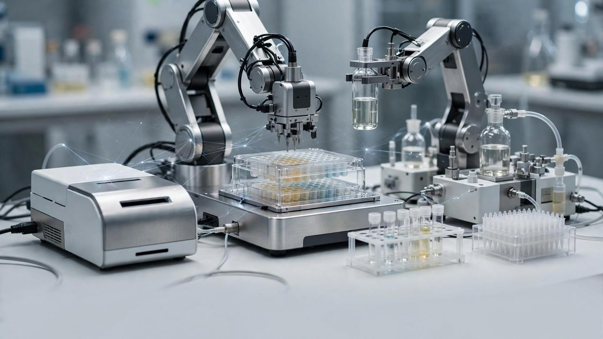

Команда Шанхайского университета Цзяо Тун под руководством Хайбо Чэня представила систему AutoDNA: оператор даёт простую текстовую команду, дальше нейросетевые агенты сами проектируют протокол, распределяют задачи между роботизированными манипуляторами и более чем 20 типами лабораторных приборов, выполняют тысячи операций за один проект — включая синтез и секвенирование ДНК — и устраняют сбои на ходу. Показательно главное отличие от прошлых «автолабораторий»: раньше ИИ управлял отдельным участком процесса, а остальное настраивали люди; AutoDNA спроектирована с нуля как единая экосистема, где агенты сами согласуют параметры разнородного оборудования.
В статье Nature описаны реальные испытания: автономный контур выявил онкогенную мутацию в образце ДНК, а ещё записал цитату Стивена Хокинга «Интеллект — это способность адаптироваться к изменениям» последовательностью из четырёх нуклеотидов — демонстрация точности, без которой работа с хрупкими биоматериалами невозможна. Людям остались две функции: перезаправка расходников и техобслуживание.
Химик-технолог Милад Аболахсани из Университета Северной Каролины, не участвовавший в проекте, назвал AutoDNA знаковым шагом к беспилотной науке: «Будущее науки будет включать много автономных лабораторий». В его оценке суть не в отдельном рекорде, а в масштабируемости подхода — оборудование подключается к системе, а рутина уходит агентам, что снижает влияние человеческого фактора на воспроизводимость результатов.
Автономные лаборатории — редкий случай, где ИИ-агенты работают не с текстом и не с кодом, а с физическими пробирками: ошибка стоит образца, а не строчки. Успех AutoDNA показывает, что агентные системы уже тянут многоэтапные физические протоколы — а это прямой путь к «фабрикам открытий», где гипотеза проверяется без человека у станка.